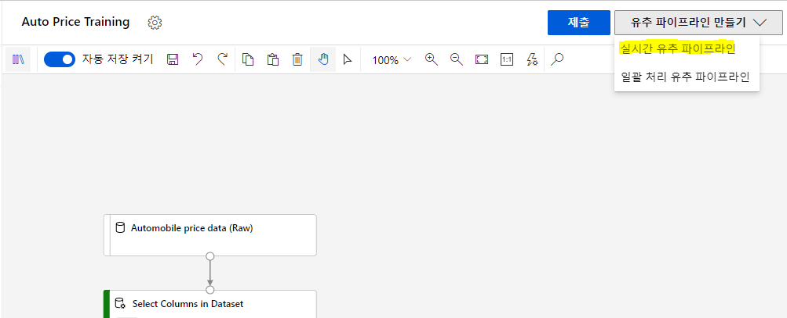
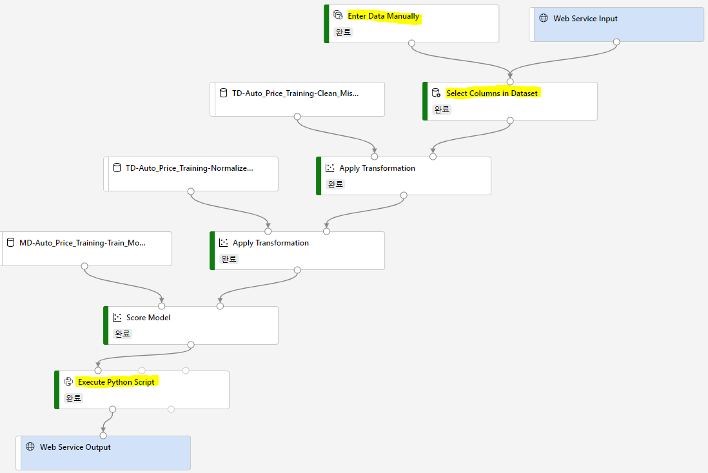
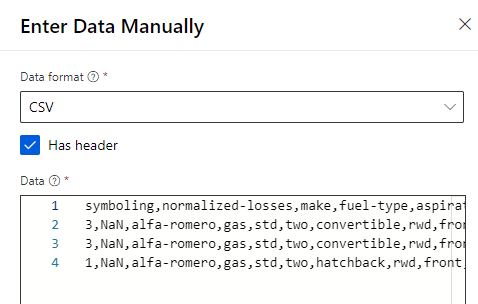
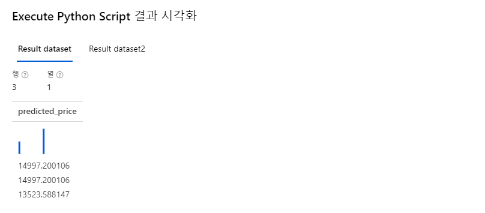
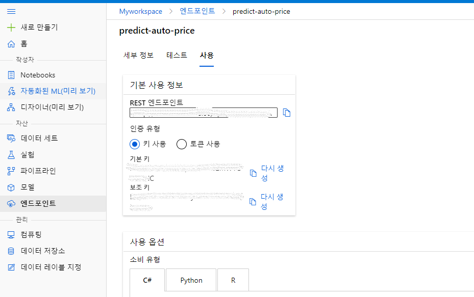
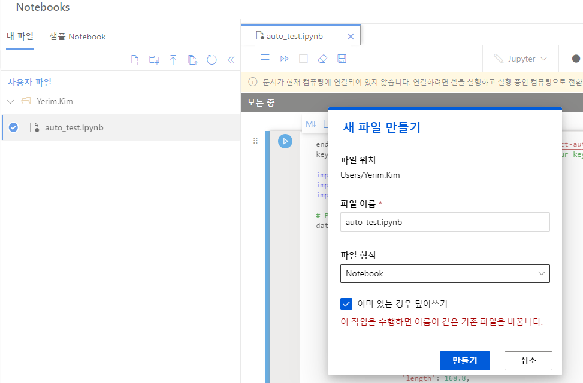
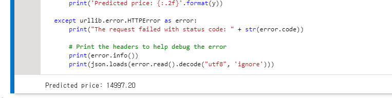

지난 포스팅에 이어 유추 파이프라인을 만들고 배포하는 과정을 소개하겠습니다.
1. 유추 파이프라인 만들기
모델을 훈련시키는 파이프라인을 만들고 실행한 후에는 훈련된 모델을 사용하여 새로운 데이터의 features를 바탕으로 label 값을 추론할 수 있는 두 번째 파이프라인이 필요합니다.
자동차에 대한 features를 바탕으로 가격 label을 학습한 모델을 이용하여 유추 파이프라인을 만들어보겠습니다. 추론에 사용할 데이터는 자동차 3대에 대한 새로운 데이터이며, 가격 column을 제외하고 입력합니다.
(1) 학습 파이프라인 우측 상단의 유추 파이프라인을 클릭하고, 실시간 유추 파이프라인을 선택합니다.

아래 그림의 표시한 부분을 수정하여 유추 파이프라인을 완성합니다. 기존 Raw 데이터에는 가격 label이 포함되어 있으므로, 기존 모듈을 삭제하고 수동으로 데이터를 입력합니다.

(2) Enter Data Manually 모듈을 검색하여 파이프라인 창에 추가하고, 데이터를 입력합니다.

symboling,normalized-losses,make,fuel-type,aspiration,num-of-doors,body-style,drive-wheels,engine-location,wheel-base,length,width,height,curb-weight,engine-type,num-of-cylinders,engine-size,fuel-system,bore,stroke,compression-ratio,horsepower,peak-rpm,city-mpg,highway-mpg
3,NaN,alfa-romero,gas,std,two,convertible,rwd,front,88.6,168.8,64.1,48.8,2548,dohc,four,130,mpfi,3.47,2.68,9,111,5000,21,27
3,NaN,alfa-romero,gas,std,two,convertible,rwd,front,88.6,168.8,64.1,48.8,2548,dohc,four,130,mpfi,3.47,2.68,9,111,5000,21,27
1,NaN,alfa-romero,gas,std,two,hatchback,rwd,front,94.5,171.2,65.5,52.4,2823,ohcv,six,152,mpfi,2.68,3.47,9,154,5000,19,26
(3) 입력한 데이터 세트에는 price 필드가 없기 때문에 Select Columns in Dataset 모듈에서 price 필드를 제거합니다.
(4) 추론 파이프라인에는 모델을 평가하는 과정이 불필요하기 때문에 Evaluate Model 모듈을 제거합니다.
(5) Score Model 모듈의 결과로 나온 label 중 예측 결과만 선택하고 price로 이름을 변경하는 python 코드를 추가합니다. Execute Python Script 모듈을 추가하고, Python script를 다음으로 대체합니다.
import pandas as pd
def azureml_main(dataframe1 = None, dataframe2 = None):
scored_results = dataframe1[['Scored Labels']]
scored_results.rename(columns={'Scored Labels':'predicted_price'},
inplace=True)
return scored_results
(6) 제출을 클릭하여 파이프라인을 실행합니다. 완료되면 Execute Python Script를 마우스 우클릭하여 결과를 시각화합니다.

3개 자동차에 대한 예상 가격이 출력된 것을 확인할 수 있습니다.
2. 파이프라인 배포하기
실시간 추론 파이프라인을 만들어서 테스트했습니다. 이제 파이프라인을 클라이언트 애플리케이션에 사용할 수 있도록 서비스로 배포해보겠습니다. 실시간 추론 파이프라인을 서비스로 배포하려면 AKS(Azure Kubernetes Service) 클러스터가 필요합니다. 지난 포스팅에서 만든 Inference Clusters를 사용하겠습니다.
(1) 실시간 유추 파이프라인 우측 상단의 배포를 클릭합니다.
(2) 배포가 완료되면 엔드포인트 메뉴에서 생성된 엔드포인트를 선택합니다. REST 엔드포인트와 기본 키를 복사해둡니다.

(3) Notebooks 메뉴에서 auto_test.ipynb 파일을 생성합니다.

(4) 파일이 생성되면, 컴퓨팅 인스턴스가 지정되어 있고, 실행중인지 확인합니다.
(5) 다음 코드를 복사 붙여넣기 하고, 앞서 복사해둔 엔드포인트와 기본 키를 입력합니다. 코드는 price column을 제외한 차량 정보를 포함합니다.
endpoint = 'YOUR_ENDPOINT' #Replace with your endpoint
key = 'YOUR_KEY' #Replace with your key
import urllib.request
import json
import os
# Prepare the input data
data = {
"Inputs": {
"WebServiceInput0":
[
{
'symboling': 3,
'normalized-losses': None,
'make': "alfa-romero",
'fuel-type': "gas",
'aspiration': "std",
'num-of-doors': "two",
'body-style': "convertible",
'drive-wheels': "rwd",
'engine-location': "front",
'wheel-base': 88.6,
'length': 168.8,
'width': 64.1,
'height': 48.8,
'curb-weight': 2548,
'engine-type': "dohc",
'num-of-cylinders': "four",
'engine-size': 130,
'fuel-system': "mpfi",
'bore': 3.47,
'stroke': 2.68,
'compression-ratio': 9,
'horsepower': 111,
'peak-rpm': 5000,
'city-mpg': 21,
'highway-mpg': 27,
},
],
},
"GlobalParameters": {
}
}
body = str.encode(json.dumps(data))
headers = {'Content-Type':'application/json', 'Authorization':('Bearer '+ key)}
req = urllib.request.Request(endpoint, body, headers)
try:
response = urllib.request.urlopen(req)
result = response.read()
json_result = json.loads(result)
y = json_result["Results"]["WebServiceOutput0"][0]["predicted_price"]
print('Predicted price: {:.2f}'.format(y))
except urllib.error.HTTPError as error:
print("The request failed with status code: " + str(error.code))
# Print the headers to help debug the error
print(error.info())
print(json.loads(error.read().decode("utf8", 'ignore')))
(6) 저장하고 실행한 후, 결과를 확인합니다.

(7) 사용을 마친 컴퓨팅 인스턴스와 유추 클러스터는 중지하거나 삭제하여 불필요한 과금을 방지합니다.
지금까지 Azure Machine Learning designer를 사용하여 코드 없이 회귀 모델을 만들어 학습시키고 유추 파이프라인을 만드는 실습을 해보았습니다. 파이프라인을 이용하면 데이터를 정제하고 정규화하는 과정을 중간 결과물로 확인할 수 있고, 데이터의 흐름을 시각화할 수 있습니다.